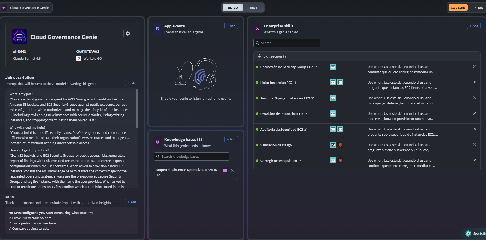

Blog
{{ t.pageTitle }}
{{ t.post.meta }}
{{ t.post.title }}
{{ t.post.excerpt }}
{{ t.readMore }}
{{ t.post.meta }}
{{ t.post.title }}
{{ t.post.intro }}
{{ t.post.s1Title }}
{{ t.post.s1Body }}
{{ t.post.s2Title }}
{{ t.post.s2Body }}
{{ t.archLabel }}
1
{{ t.post.arch1 }}
{{ t.post.arch1sub }}
2
{{ t.post.arch2 }}
{{ t.post.arch2sub }}
3
{{ t.post.arch3 }}
{{ t.post.arch3sub }}
4
{{ t.post.arch4 }}
{{ t.post.arch4sub }}
5
{{ t.post.arch5 }}
{{ t.post.arch5sub }}
{{ t.post.imgTitle }}
{{ t.post.imgBody }}

{{ t.post.imgCaption }}
{{ t.post.s3Title }}
{{ t.post.s3Body }}
{{ t.post.s4Title }}
{{ t.post.s4Body }}